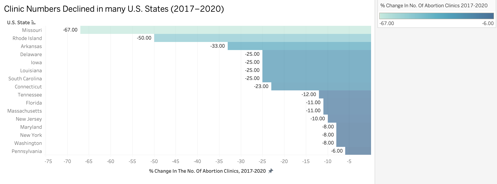
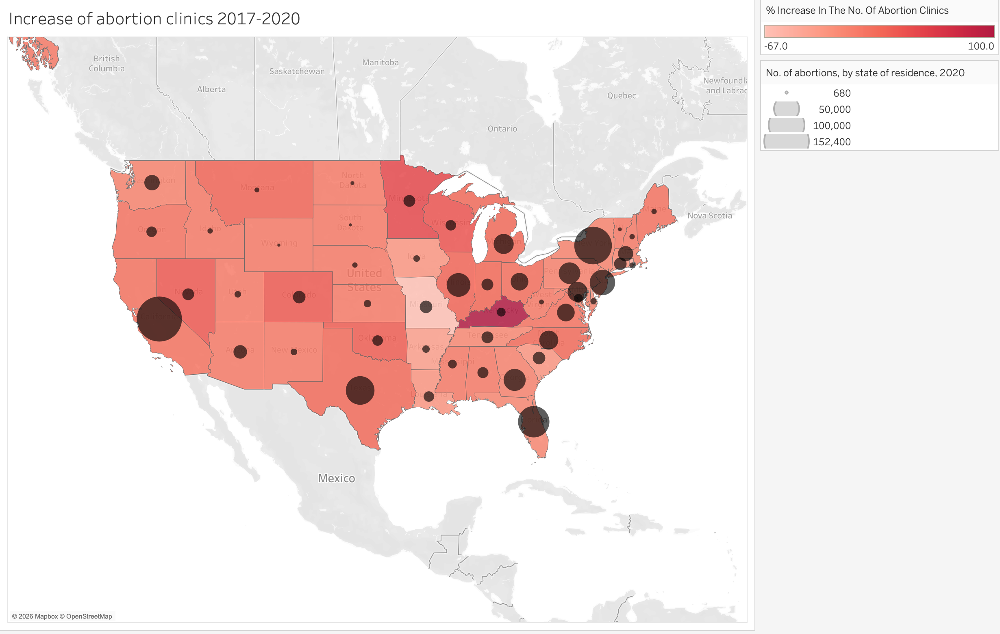

Proposition: Abortion access significantly declined between 2017 and 2020 across the U.S.
FOR the Proposition

Design Decisions and Rationale:
-
Filtering to Include Only States With Clinic Declines (Score: –2)
I chose to include only the 16 states that experienced a decrease in the number of abortion clinics between 2017 and 2020. This filtering decision deliberately excludes states that saw stability or growth, thereby removing contextual balance. While all displayed data are factually accurate, the omission creates a visual impression that decline was widespread or universal across the country. I considered including all states in a diverging bar chart to show both increases and decreases. However, that approach would have diluted the visual dominance of negative values. By restricting the dataset, I transformed a mixed national pattern into a concentrated narrative of contraction. -
Displaying Exact Percentage Labels on Bars (Score: +2)
I included exact percentage values as labels on each bar (e.g., –67% for Missouri). This increases transparency and analytical clarity by allowing viewers to see the magnitude of change directly rather than estimating from bar length alone. It strengthens credibility and ensures that the visual impression of decline is numerically grounded. Although the filtering decision shapes the narrative, the numeric labels themselves accurately represent the underlying data and improve interpretability. This design choice helps protect against accusations of visual exaggeration while still reinforcing the persuasive framing. -
Title Framing and Axis Language (Score: –1)
The title and axis labeling were intentionally written to reinforce the proposition that abortion access declined. By using assertive language such as “Clinic Reductions Across U.S. States” rather than neutral phrasing like “Change in Number of Clinics (2017–2020),” the framing primes the viewer to interpret the data as evidence of systemic contraction. While the wording is not factually incorrect, it shifts the visualization from descriptive to argumentative. I considered a neutral title but selected stronger language to align the visualization clearly with the persuasive goal of this section. -
Sorting Bars by Magnitude of Decrease (Score: –1)
I sorted the bars from largest percentage decrease to smallest. This ordering emphasizes the most dramatic cases (such as states with reductions exceeding 50%) and places them at the top of the visual hierarchy. The viewer encounters the most extreme examples first, reinforcing the perception of crisis or widespread decline. An alphabetical ordering would have been more neutral but less rhetorically powerful.
AGAINST the Proposition

Design Decisions and Rationale:
-
Framing Language in the Title and Legend (Score: –1.5)
I intentionally used language such as “increase” in the title and color legend to subtly guide the reader toward interpreting the data as evidence of stability or growth. While technically accurate for many states, this wording foregrounds positive trends and downplays declines. The phrasing frames the data through a lens of expansion rather than contraction, even though some states did experience decreases. I considered using more neutral language such as “Change in Clinic Numbers (2017–2020),” but chose directional terminology because it primes the viewer to interpret the visualization as counterevidence to the decline proposition. -
Sequential Red Color Scale That Obscures Negative Values (Score: –1.5)
I selected a sequential red color scale ranging from light red to dark red to represent percent change in clinics. This palette visually implies uniform increase. States with negative percent change appear as very light red rather than a contrasting color (e.g., blue), minimizing the perceptual salience of declines. A diverging red–blue scale centered at zero would have more transparently represented increases and decreases. I chose not to use one because it would visually reintroduce evidence of decline and weaken the persuasive message. This decision compresses interpretive contrast without falsifying any data values. -
Overlaying Dots Sized by Number of Abortions (Residence) (Score: –2)
I added proportional circles sized by the number of abortions by state of residence in 2020. While the data are accurate, this encoding does not directly address clinic access. Instead, it visually emphasizes the continued presence and scale of abortion across states, implying robustness or persistence. The rhetorical effect is that large circles signal stability in abortion services, even though the metric is not directly tied to clinic access trends. I considered using change in abortion numbers over time, but that measure included declines in some states that would have complicated my argument. The inclusion of absolute abortion counts shifts attention away from access metrics and toward overall magnitude. -
Inclusion of All States Without Filtering (Score: +2)
Unlike the “decline” visualization, this map retains the full dataset, including states with increases, decreases, and no change. This improves transparency and strengthens the appearance of analytical completeness. Because no states are excluded, the visualization appears more comprehensive and thus more trustworthy. Although other design choices guide interpretation, the dataset itself remains intact. -
Omission of Change-in-Abortion-Rate Metrics (Score: –1)
I chose not to include change-in-abortion-rate measures between 2017 and 2020 because those values included declines in certain states that would undermine the “no significant decline” framing. Instead, I focused on variables that could suggest persistence or stability. This reflects selective emphasis rather than fabrication. However, it demonstrates how data choice alone can meaningfully influence interpretation.
Final Reflection
Designing both visualizations clarified how much interpretive power lies in data selection rather than in graphical distortion alone. The “decline” visualization relies heavily on exclusion: by filtering to include only states with decreases, it constructs a concentrated narrative of access contraction. In contrast, the visualization arguing against the proposition retains the full dataset but uses visual encoding choices such as color scale, framing language, and symbolic overlays to subtly guide interpretation without removing counterevidence.
What surprised me most was how easily persuasion can be achieved without altering a single numerical value. Ethical risk often emerges not from falsification, but from emphasis, omission, and framing. I now define ethical analysis and visualization as a practice that requires transparency in both data inclusion and design intent. Acceptable persuasive choices, in my view, include expressive titles, thoughtful ordering, and strategic emphasis as long as they do not conceal relevant counterevidence. Misleading choices cross the line when they remove necessary context or obscure meaningful variation in ways that materially distort interpretation. This assignment demonstrated that the most consequential design decision is often what data to include, not how to encode it, and that responsible visualization requires acknowledging how easily persuasion can slide into manipulation.